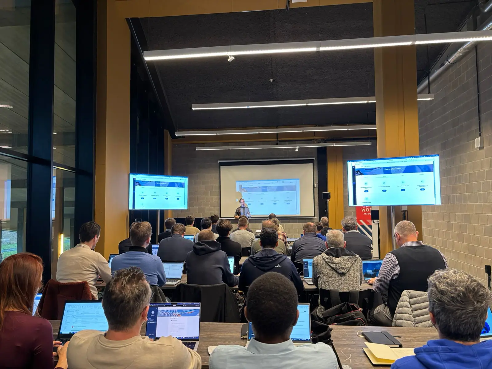

Training Bar
Security and AI in Microsoft Fabric
A full-day, hands-on workshop delivered by U2U. Lock down workspaces, items and OneLake data down to the row and column, then put Copilot, Fabric Data Agents, Fabric IQ and MCP to work. Bring a laptop: four of the five modules end in a lab.
- 08:45 - 17:00
- Training Bar room
- Delivered by U2U
- For Fabric practitioners

Course outline
Friday 4 December 2026 · Training Bar room · by U2U
Who it's for
Data engineers, BI professionals, Fabric administrators and other technical profiles who already work hands-on with Microsoft Fabric and want to go deeper on its security and AI capabilities.
What you'll learn
How to configure access to Fabric workspaces and data, apply granular security in OneLake, and work with data through Copilot and Fabric Data Agents. Plus how Fabric IQ and the Model Context Protocol connect Fabric to AI agents and external applications.
Part 1
Microsoft Fabric Security
-
01
Microsoft Fabric Security Essentials
Fabric controls access at several levels: workspaces, items and the data inside them. This module explains the Fabric permission model and how those levels work together.
- Control plane versus data plane security
- Overview of the Fabric permission model
- Workspace roles
- Item permissions and sharing
- Lakehouse and Warehouse access
- Shortcut security in OneLake
Lab Configuring Microsoft Fabric security
-
02
Fine-Grained Security with OneLake
OneLake security gives granular access control over data stored in OneLake. Security roles control access to specific tables and folders, and can restrict access down to the row and column.
- OneLake Security Overview
- OneLake Security Roles
- Permissions and Role Membership
- Table and Folder Security
- Column-Level Security
- Row-Level Security
- Security across Fabric engines
Lab Implementing OneLake Security
Part 2
AI Integration in Microsoft Fabric
-
03
Using Copilot in Microsoft Fabric
Copilot is available across Fabric workloads and helps developers and data professionals with common tasks. An overview of the Copilot experiences on offer and where each one is useful.
- How Copilot fits into Microsoft Fabric
- Licensing and prerequisites
- Using Copilot in Data Engineering
- Using Copilot with SQL and Warehouses
- Using Copilot in Data Factory
- Data privacy and security
Lab Using Copilot in Microsoft Fabric
-
04
Fabric Data Agents: Chat with your Data
Fabric Data Agents let people ask questions about data in Fabric in natural language. Learn how to create a Data Agent, connect it to your Fabric data and improve the quality of its answers.
- Purpose of Fabric Data Agents
- Supported Fabric data sources
- Creating and Publishing a Fabric Data Agent
- Interacting with a Fabric Data Agent
- Understanding Permission Delegation
- Improving Answers with Instructions and Example Queries
-
05
Connecting AI Agents with Fabric IQ and MCP
Fabric IQ adds business context on top of your Fabric data and makes it available to users and AI agents. The Model Context Protocol (MCP) is a standard way for AI applications to connect to external data and services. Together, they put Fabric data and capabilities within reach of AI agents.
- Introduction to Fabric IQ
- Business context and intelligence in Fabric
- Introduction to the Model Context Protocol (MCP)
- Microsoft Fabric MCP Servers
- Using a Fabric Data Agent as an MCP Server
- Connecting External AI Agents to Microsoft Fabric
- Authentication, Permissions and Security
Lab Connecting an AI Agent to Microsoft Fabric using MCP
Course content by U2U, Belgian developer and IT training. View the course on u2u.be
Tickets are released in three waves: the earlier you book, the less you pay.
Get tickets